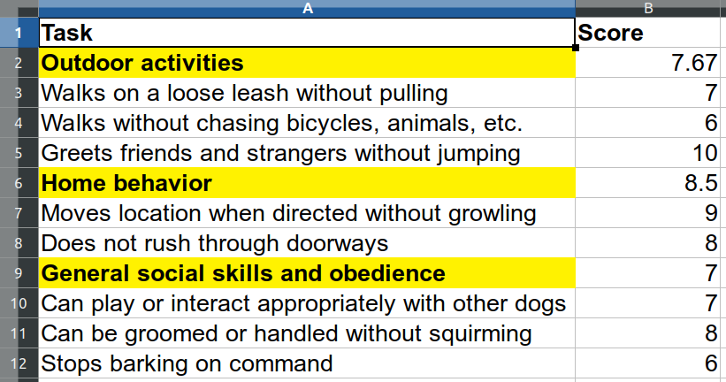
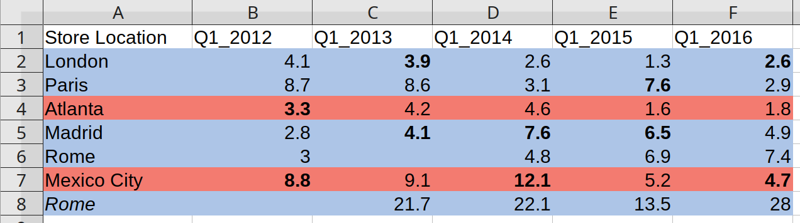

When we work with other people’s data, we often have to struggle through multiple unexpected steps before we get to a flexible, usable structure. Popular ways of structuring and presenting data can place content beyond the reach of code-based routines to tackle repetitive tasks efficiently.
Package functions
The functions in unheadr help us rework data shared by
other people, from a human-readable structure to a tidier
machine-readable structure on which we can perform common data
manipulation tasks.
Data frames and tibbles
Here is how unheadr works with tibble and data frame
objects that suffer from common issues such as:
- Embedded subheaders
- Broken values
- Merged cells and values wrapped within columns
- Broken rows
- Broken headers
Embedded subheaders are usually grouping variables embedded into another variable, used to show hierarchical data or create small multiples of data.
A simple example would be a coffee shop menu:
dat <- data.frame(
drink = c(
"Cold Drinks", "Soda", "Water", "Juice", "Lemonade",
"Hot Drinks", "Tea", "Coffee"
),
price = c(NA, 2.99, 1.99, 3.15, 2, NA, 3.99, 1.99), stringsAsFactors = FALSE
)
dat
#> drink price
#> 1 Cold Drinks NA
#> 2 Soda 2.99
#> 3 Water 1.99
#> 4 Juice 3.15
#> 5 Lemonade 2.00
#> 6 Hot Drinks NA
#> 7 Tea 3.99
#> 8 Coffee 1.99The beverage type is embedded in the ‘drinks’ variable. If we can
match them with regular expressions, we can move the grouping values
into their own variable using untangle2()
untangle2(dat, "Drinks$", drink, "beverage_type")
#> 2 matches
#> drink price beverage_type
#> 1 Soda 2.99 Cold Drinks
#> 2 Water 1.99 Cold Drinks
#> 3 Juice 3.15 Cold Drinks
#> 4 Lemonade 2.00 Cold Drinks
#> 5 Tea 3.99 Hot Drinks
#> 6 Coffee 1.99 Hot DrinksBroken values usually happen when we’re pressed for space.
For whatever reason, the entries for the Barcelona 1992 and London 2012 Olympics are broken across two contiguous rows and NAs are used as padding in the other variables.
OGames <- tibble(
Games = c("Los Angeles 1984", "Barcelona", "1992", "Atlanta 1996", "Sydney 2000", "London", "2012"),
Country = c("USA", "Spain", NA, "USA", "Australia", "UK", NA),
Soccer_gold_medal = c("France", "Spain", NA, "Nigeria", "Cameroon", "Mexico", NA)
)
OGames
#> # A tibble: 7 × 3
#> Games Country Soccer_gold_medal
#> <chr> <chr> <chr>
#> 1 Los Angeles 1984 USA France
#> 2 Barcelona Spain Spain
#> 3 1992 NA NA
#> 4 Atlanta 1996 USA Nigeria
#> 5 Sydney 2000 Australia Cameroon
#> 6 London UK Mexico
#> 7 2012 NA NAIn this case, we can use unbreak_vals() to ‘unbreak’ the
lines in the ‘Games’ variable, matching the strings that start with
numbers.
OGames %>%
unbreak_vals("^[0-9]", Games, Games_unbroken, slice_groups = TRUE) %>%
select(Games_unbroken, everything())
#> Warning: argument slice_groups is deprecated; extra rows and the variable with
#> broken values are now dropped by default.
#> # A tibble: 5 × 3
#> Games_unbroken Country Soccer_gold_medal
#> <chr> <chr> <chr>
#> 1 Los Angeles 1984 USA France
#> 2 Barcelona 1992 Spain Spain
#> 3 Atlanta 1996 USA Nigeria
#> 4 Sydney 2000 Australia Cameroon
#> 5 London 2012 UK MexicoWrapped columns often happen when we merge cells in spreadsheets or use table formatting in a word processor, resulting in empty or NA values used to pad all the vertical space.
knicks <- data.frame(
stringsAsFactors = FALSE,
player = c("Allan Houston", NA, "Latrell Sprewell", NA, NA),
teams = c(
"Pistons", "Knicks", "Warriors", "Knicks",
"Timberwolves"
),
position = c("Shooting guard", NA, "Small forward", NA, NA)
)
knicks
#> player teams position
#> 1 Allan Houston Pistons Shooting guard
#> 2 <NA> Knicks <NA>
#> 3 Latrell Sprewell Warriors Small forward
#> 4 <NA> Knicks <NA>
#> 5 <NA> Timberwolves <NA>We can unwrap the ‘teams’ values into a single string using
unrwap_cols().
knicks %>% unwrap_cols(groupingVar = player, separator = ", ")
#> # A tibble: 2 × 3
#> player teams position
#> <chr> <chr> <chr>
#> 1 Allan Houston Pistons, Knicks Shooting guard
#> 2 Latrell Sprewell Warriors, Knicks, Timberwolves Small forwardThis is more or less the opposite to separate_rows()
from tidyr.
Line breaks meant to separate values inside a merged cell can be problematic. This often results from parsing tables from PDF or Word documents.
merged_dat <- data.frame(
stringsAsFactors = FALSE,
Name = c("Valery V."),
Asset = c("Apartment\n\nPlot\nHouse\nOther\nApartment"),
Area = c("45.7\n\n69.2\n65.0\n32.2\n36.9\n\n\n"),
Status = c("Owned\n\nOwned\nIn use\nUnknown\nOwned\n")
)
merged_dat
#> Name Asset
#> 1 Valery V. Apartment\n\nPlot\nHouse\nOther\nApartment
#> Area Status
#> 1 45.7\n\n69.2\n65.0\n32.2\n36.9\n\n\n Owned\n\nOwned\nIn use\nUnknown\nOwned\nTo remove duplicated and trailing new line sequences
“\n”, we can use squish_newlines().
merged_dat %>%
mutate(across(c(Asset:Status), squish_newlines)) %>%
tidyr::separate_rows(c(Asset:Status), sep = "\n")
#> # A tibble: 5 × 4
#> Name Asset Area Status
#> <chr> <chr> <chr> <chr>
#> 1 Valery V. Apartment 45.7 Owned
#> 2 Valery V. Plot 69.2 Owned
#> 3 Valery V. House 65.0 In use
#> 4 Valery V. Other 32.2 Unknown
#> 5 Valery V. Apartment 36.9 OwnedIn this example, after applying the function across the variables with problematic line breaks it was possible to separate the rows into a tidy structure.
Broken rows have values of two contiguous rows broken up and padded with empty or NA values.
basketball <-
data.frame(
stringsAsFactors = FALSE,
v1 = c(
"Player", NA, "Sleve McDichael", "Dean Wesrey",
"Karl Dandleton", "Mike Sernandez",
"Glenallen Mixon", "Rey McSriff"
),
v2 = c(
"Most points", "in a game", "55", "43", "41", "111", "109", "104"
),
v3 = c(
"Season", "(year ending)", "2001", "2000", "2002",
"2000", "2002", "2001"
)
)
basketball
#> v1 v2 v3
#> 1 Player Most points Season
#> 2 <NA> in a game (year ending)
#> 3 Sleve McDichael 55 2001
#> 4 Dean Wesrey 43 2000
#> 5 Karl Dandleton 41 2002
#> 6 Mike Sernandez 111 2000
#> 7 Glenallen Mixon 109 2002
#> 8 Rey McSriff 104 2001In this case, we can match any value in any variable along the row that has broken values.
unbreak_rows(basketball, "^Most", v2)
#> 1 match
#> v1 v2 v3
#> 1 Player Most points in a game Season (year ending)
#> 2 Sleve McDichael 55 2001
#> 3 Dean Wesrey 43 2000
#> 4 Karl Dandleton 41 2002
#> 5 Mike Sernandez 111 2000
#> 6 Glenallen Mixon 109 2002
#> 7 Rey McSriff 104 2001Broken headers are variable names broken up across the first few rows.
vehicles <-
data.frame(
stringsAsFactors = FALSE,
Vehicle = c(NA, NA, NA, "Truck", "Motorcycle", "Sedan", "Van"),
Price = c("in","2014",
"(local currency)","50000","44000","33000","50000"),
Color = c(NA, NA, NA, "White", "Black", "Red", "White"),
Emissions = c("Certificate", NA, NA, "TRUE", "FALSE", "TRUE", "TRUE")
)
vehicles
#> Vehicle Price Color Emissions
#> 1 <NA> in <NA> Certificate
#> 2 <NA> 2014 <NA> <NA>
#> 3 <NA> (local currency) <NA> <NA>
#> 4 Truck 50000 White TRUE
#> 5 Motorcycle 44000 Black FALSE
#> 6 Sedan 33000 Red TRUE
#> 7 Van 50000 White TRUEHere, the column names are broken. The top three rows (in addition to the column name) contain fragments of the name and should be mashed together column-wise.
The mash_colnames() function makes these many header
rows into column names. The names are broken up across the top three
rows, which goes in to the n_name_rows argument. Unlike
other functions in unheadr, we provide the number of rows
directly, rather than attempt any string matching.
mash_colnames(df= vehicles, n_name_rows = 3, keep_names = TRUE)
#> Vehicle Price_in_2014_(local currency) Color Emissions_Certificate
#> 4 Truck 50000 White TRUE
#> 5 Motorcycle 44000 Black FALSE
#> 6 Sedan 33000 Red TRUE
#> 7 Van 50000 White TRUEWhen importing data with broken headers into R, variable names are not always assigned from the values in top row, leaving us with automatically generated names (e.g. X1, X2, X3, etc.).
vehicles_skip <-
data.frame(
stringsAsFactors = FALSE,
X1 = c("Vehicle",NA,NA,NA,"Truck",
"Motorcycle","Sedan","Van"),
X2 = c("Price","in","2014",
"(local currency)","50000","44000","33000","50000"),
X3 = c("Color", NA, NA, NA, "White", "Black", "Red", "White"),
X4 = c("Emissions","Certificate",NA,
NA,"TRUE","FALSE","TRUE","TRUE")
)
vehicles_skip
#> X1 X2 X3 X4
#> 1 Vehicle Price Color Emissions
#> 2 <NA> in <NA> Certificate
#> 3 <NA> 2014 <NA> <NA>
#> 4 <NA> (local currency) <NA> <NA>
#> 5 Truck 50000 White TRUE
#> 6 Motorcycle 44000 Black FALSE
#> 7 Sedan 33000 Red TRUE
#> 8 Van 50000 White TRUEIn this case, the keep_names argument in
mash_colnames() lets us ignore the object names when
building new names from the first four rows of the data.
mash_colnames(df= vehicles_skip, n_name_rows = 4, keep_names = FALSE)
#> Vehicle Price_in_2014_(local currency) Color Emissions_Certificate
#> 5 Truck 50000 White TRUE
#> 6 Motorcycle 44000 Black FALSE
#> 7 Sedan 33000 Red TRUE
#> 8 Van 50000 White TRUELastly, the sliding_headers argument in
mash_colnames can be used for tables with ragged names, in
which not every column has a value in the very first row. In such cases,
attribution by adjacency is assumed, and when
sliding_headers = TRUE the names are filled row-wise. This
can be useful for tables reporting survey data or experimental designs
in an untidy manner.
survey <-
data.frame(
stringsAsFactors = FALSE,
X1 = c("Participant", NA, "12", "34", "45", "123"),
X2 = c("How did you hear about us?",
"TV","TRUE","FALSE","FALSE","FALSE"),
X3 = c(NA, "Social Media", "FALSE", "TRUE", "FALSE", "FALSE"),
X4 = c(NA, "Radio", "FALSE", "TRUE", "FALSE", "TRUE"),
X5 = c(NA, "Flyer", "FALSE", "FALSE", "FALSE", "FALSE"),
X6 = c("Age", NA, "31", "23", "19", "24")
)
survey
#> X1 X2 X3 X4 X5 X6
#> 1 Participant How did you hear about us? <NA> <NA> <NA> Age
#> 2 <NA> TV Social Media Radio Flyer <NA>
#> 3 12 TRUE FALSE FALSE FALSE 31
#> 4 34 FALSE TRUE TRUE FALSE 23
#> 5 45 FALSE FALSE FALSE FALSE 19
#> 6 123 FALSE FALSE TRUE FALSE 24
mash_colnames(survey,2,keep_names = FALSE,sliding_headers = TRUE, sep = "_")
#> Participant How did you hear about us?_TV
#> 3 12 TRUE
#> 4 34 FALSE
#> 5 45 FALSE
#> 6 123 FALSE
#> How did you hear about us?_Social Media How did you hear about us?_Radio
#> 3 FALSE FALSE
#> 4 TRUE TRUE
#> 5 FALSE FALSE
#> 6 FALSE TRUE
#> How did you hear about us?_Flyer Age
#> 3 FALSE 31
#> 4 FALSE 23
#> 5 FALSE 19
#> 6 FALSE 24Spreadsheets
unheadr also includes a function for flattening font and
cell formatting in spreadsheet files into character strings in the
corresponding cell.
Supported formatting:
- bold text
- colored text
- italic text,
- text with strikethrough
- underlined text
- double underlined text
- cell highlighting
One of the example files bundled with unheadr looks like
this:

Font formatting and cell highlighting is being used to label an
embedded grouping variable (meaningful formatting). The
annotate_mf() function flattens the formatting into a
character string describing the formatting. The hex8 code of the colors
used for cell or text highlighting is also included.
example_spreadsheet <- system.file("extdata/dog_test.xlsx", package = "unheadr")
annotate_mf(example_spreadsheet, orig = Task, new = Task_annotated)
#> # A tibble: 11 × 3
#> Task Task_annotated Score
#> <chr> <chr> <dbl>
#> 1 Outdoor activities (bold, highlight-FF… 7.67
#> 2 Walks on a loose leash without pulling Walks on a loose le… 7
#> 3 Walks without chasing bicycles, animals, etc. Walks without chasi… 6
#> 4 Greets friends and strangers without jumping Greets friends and … 10
#> 5 Home behavior (bold, highlight-FF… 8.5
#> 6 Moves location when directed without growling Moves location when… 9
#> 7 Does not rush through doorways Does not rush throu… 8
#> 8 General social skills and obedience (bold, highlight-FF… 7
#> 9 Can play or interact appropriately with other dogs Can play or interac… 7
#> 10 Can be groomed or handled without squirming Can be groomed or h… 8
#> 11 Stops barking on command Stops barking on co… 6To apply this approach to all cells in a spreadsheet, we call
annotate_mf_all(). In this other bundled example file,
negative values (first quarter losses) are indicated by bold.

example_spreadsheetb <- system.file("extdata/boutiques.xlsx", package = "unheadr")
annotate_mf_all(example_spreadsheetb)
#> # A tibble: 7 × 6
#> `Store Location` Q1_2012 Q1_2013 Q1_2014 Q1_2015 Q1_2016
#> <chr> <chr> <chr> <chr> <chr> <chr>
#> 1 (highlight-FFADC5E7) London (highlight-… (bold,… (highl… (highl… (bold,…
#> 2 (highlight-FFADC5E7) Paris (highlight-… (highl… (highl… (bold,… (highl…
#> 3 (highlight-FFF37B70) Atlanta (bold, high… (highl… (highl… (highl… (highl…
#> 4 (highlight-FFADC5E7) Madrid (highlight-… (bold,… (bold,… (bold,… (highl…
#> 5 (highlight-FFADC5E7) Rome (highlight-… (highl… (highl… (highl… (highl…
#> 6 (highlight-FFF37B70) Mexico City (bold, high… (highl… (bold,… (highl… (bold,…
#> 7 (highlight-FFADC5E7, italic) Rome (highlight-… (highl… (highl… (highl… (highl…Character vectors
Tables from PDF or other similar sources can often be imported into R
as character vectors with one element for each line. These can then be
parsed as fixed width files or separated into columns.
unheadr now includes the regex_valign()
function for aligning elements in these vectors vertically by inserting
padding whitespace (and optional separators) at positions along each
line matched by a regular expression.
This example is based on how data on hotel guests (ID, State of
Origin, and Date) in a PDF is parsed by
pdftools::pdf_text.
guests <-
unlist(strsplit(c("6 COAHUILA 20/03/2020
712 COAHUILA 20/03/2020"),"\n"))
guests
#> [1] "6 COAHUILA 20/03/2020"
#> [2] "712 COAHUILA 20/03/2020"There is inconsistent whitespace between the first and second data ‘columns’. With a regular expression that matches a word boundary and uppercase letters, we can adjust the whitespace so that the matched positions are the same across lines.
regex_valign(guests, "\\b(?=[A-Z])")
#> [1] "6 COAHUILA 20/03/2020"
#> [2] "712 COAHUILA 20/03/2020"This output is easier to parse with readr or other
data-munging approaches.
Further reading
The underlying reasoning, background, and possible uses of
unheadr are described in this publication:
Verde Arregoitia, L. D., Cooper, N., D’Elía, G. (2018). Good practices for sharing analysis-ready data in mammalogy and biodiversity research. Hystrix, the Italian Journal of Mammalogy, 29(2), 155-161. Open Access, 10.4404/hystrix-00133-2018.